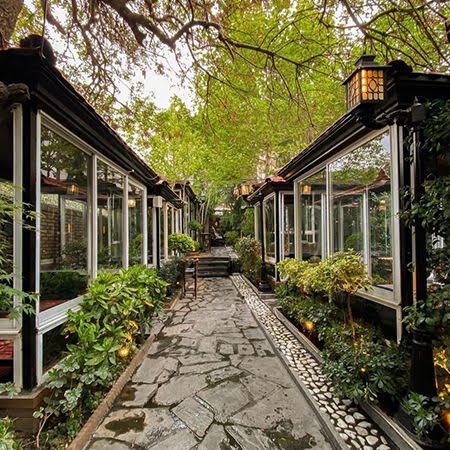
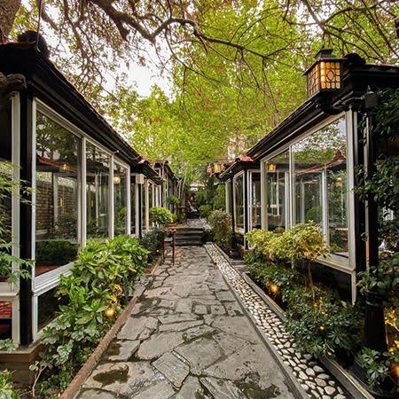

درباره رستوران سلطان
رستوران ما جایست که عطر غذا قبل از خودش وارد می شود و آدم را به یک سفر کوچک خوشطمع دعوت می کند. مواد اولیه تازه و دست بخت آشپزهای حرفهای هر بشقاب را به تجربهای دلچسب تبدیل میکند. فضای گرم و صمیمی رستوران لحظهها را آرام و لذتبخش میسازد. اینجا مقصدی برای کسانیست که طعم خوب و حس خوب را کنار هم میخواهند.
 
